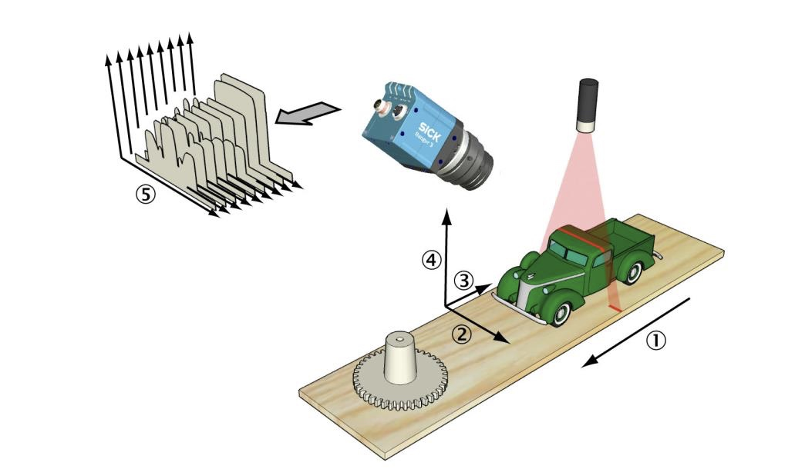
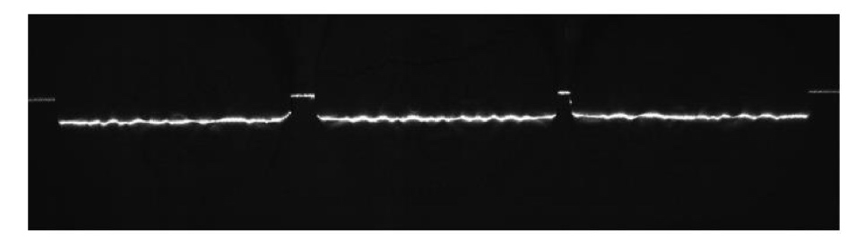
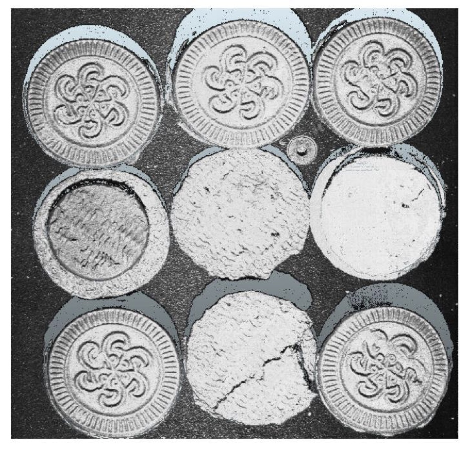
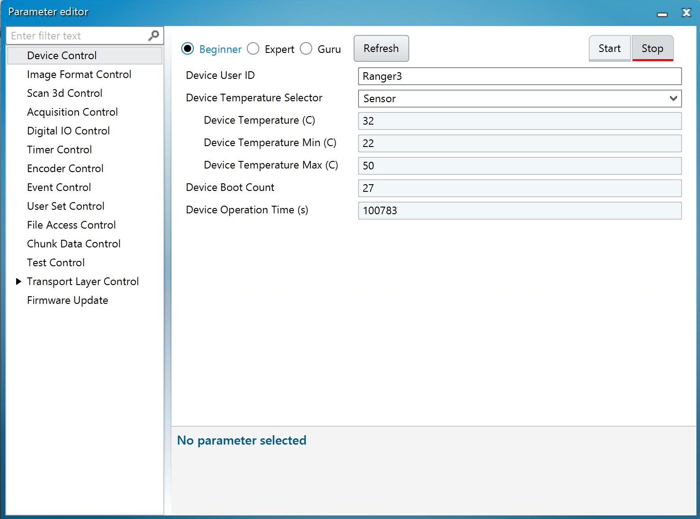
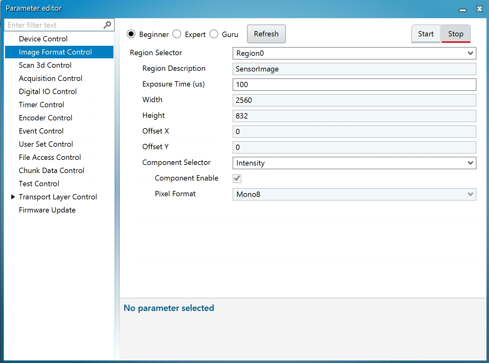
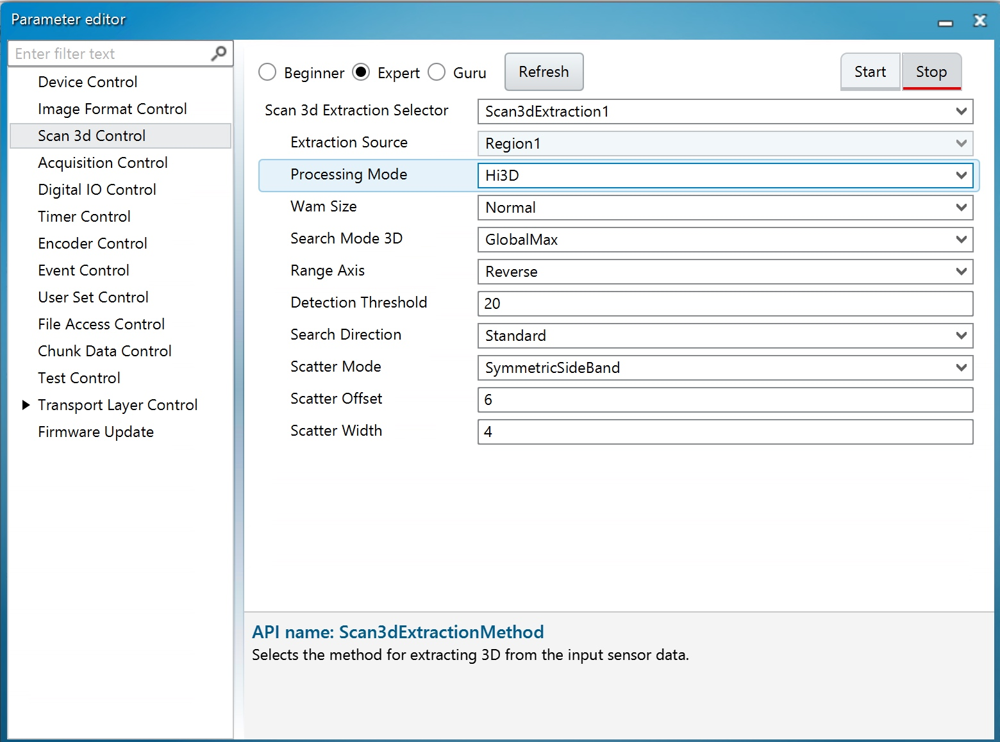
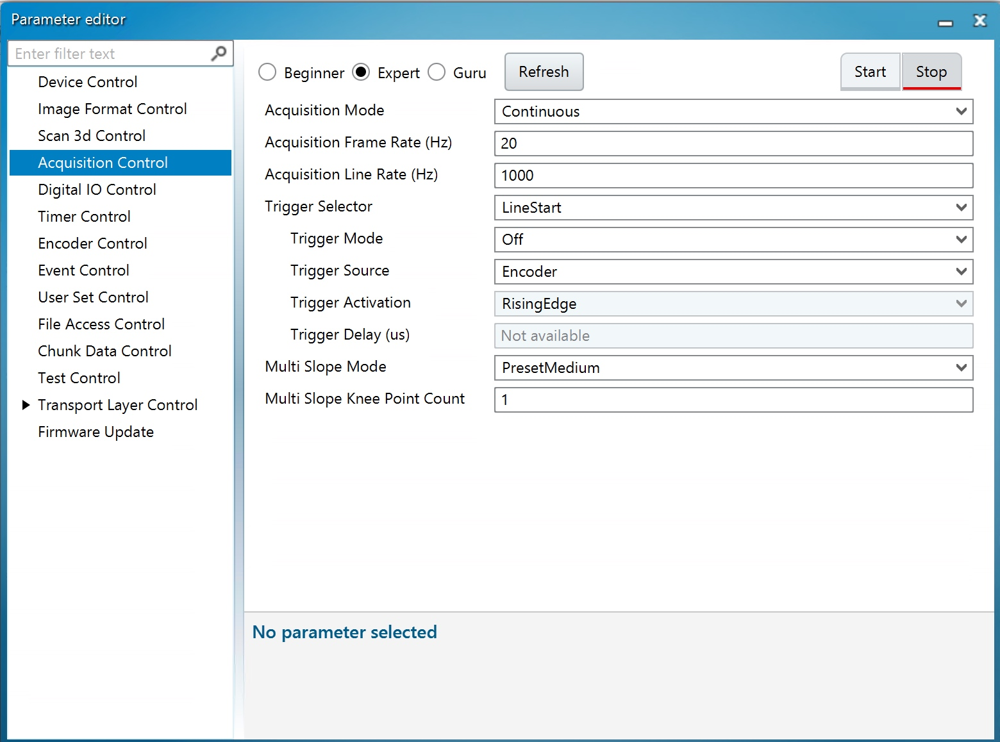
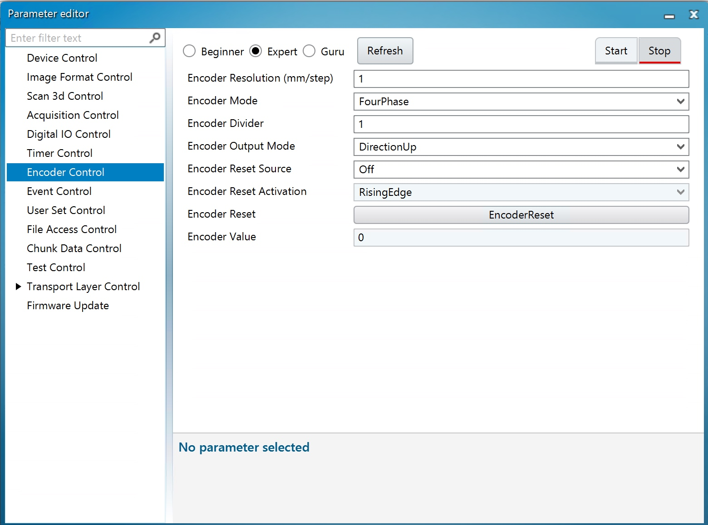
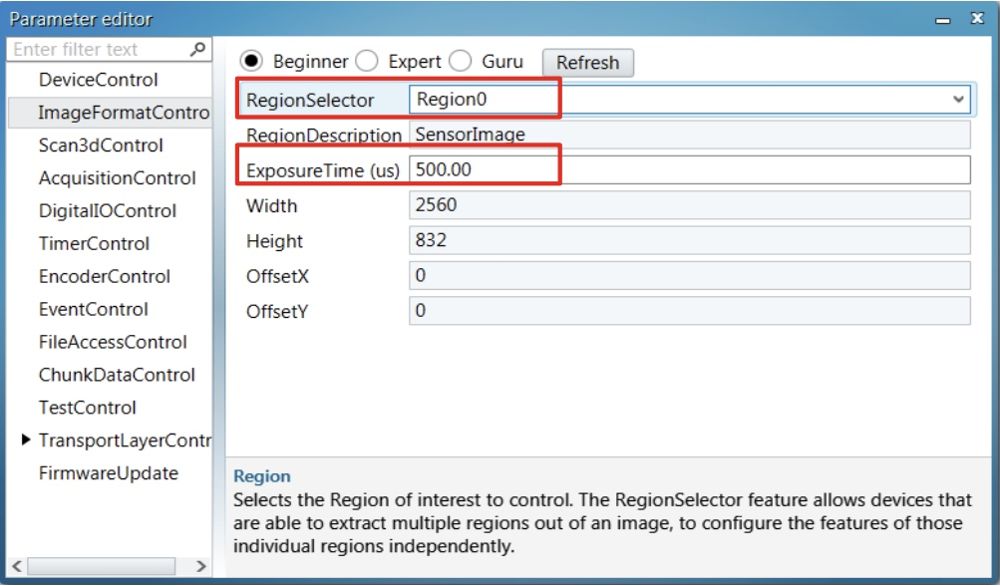
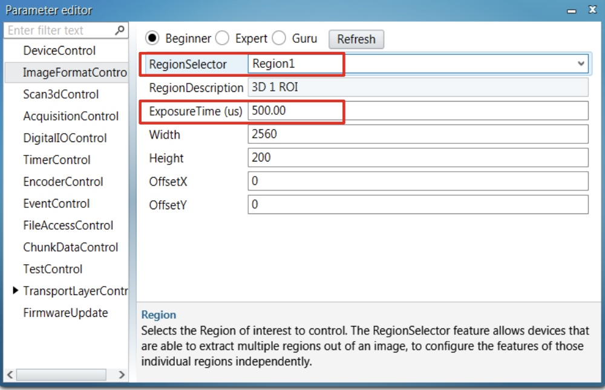

Sick Ranger3详细使用说明
2021/01/03
2021/01/03

@1 移动方向，@2 X 方向(宽度)，@3 Y 的负方向，@4 Z 方向(Range)，@5 剖面
如上图的架设，相机通过采集照射在被测物体上的激光线，提取高度信息，进而生成 3D 图像。
Ranger3 本身也是一个 2D 相机，其基本结构和一般 2D 相机别无二致。但是 Ranger3 内部集成了采集剖面生 成 3D 数据的算法，所以可以直接输出高精度的 3D 图像。
Ranger3 的输出数据主要分为 3 种。
Sensor图像
此图像和一般的 2D 相机图像一样。是直接从相机感光元件上获得的灰度图像。数据类型为 uint8_t(unsigned char)

Range图像
此图像是由内部算法合成的 3D 图像数据。它是由若干的 Sensor 图像组合而来。uint16_t(原始数据)或者 float(标定后数据)。其中标定后数据直接反应实际的物理高度。
Reflectance 图像
此图像是和 Range 图像配套生成的。它描述的是激光照射时的光强度。数据类型为 uint8_t(unsigned char)。

相机供电：24V开关电源，有5个接线柱，分别为：零，火，地，正，负。
相机的接线引脚如下表
可能会用到的只有1，2，5，6，11，12和18
| 引脚 | 信号 | 说明 |
|---|---|---|
| 1 浅蓝 | GND | 接地电压供给/信号 |
| 2 白 | POWER SUPPLY | 电压供给24V DC |
| 3 灰 | - | 未连接 |
| 4 紫 | - | 未连接 |
| 5 蓝 | ENC IN A+ | 编码器输入端 A+ (5 V) / 编码器输出端 A (24 V) 可配置:RS-422 TTL/ HTL 标配:RS-422 TTL |
| 6 绿 | ENC IN A- | 编码器输入端 A- / 不连接 可配置:RS-422 TTL/ HTL 标配:RS-422 TTL |
| 7 黄 | - | 保留 |
| 8 蓝白 | - | 保留 |
| 9 绿白 | - | 未连接 |
| 10 橙白 | FRAME TRIGGER IN | 24 V 帧触发器输入端或可配置的 24 V 输入端/输出端 标配:帧触发器输入端 |
| 11 棕 | ENC IN B+ | 编码器输入端 B+ (5 V) / 编码器输出端 B (24 V) 可配置:RS-422 TTL/ HTL 标配:RS-422 TTL |
| 12 橙 | ENC IN B- | 编码器输入端 B- / 不连接 可配置:RS-422 TTL/ HTL 标配:RS-422 TTL |
| 13 粉 | LASER STROBE OUT1 | 针对激光器或选通的 5 V 触发器输出 |
| 14 浅绿 | LASER STROBE OUT2 | 针对激光器或选通的 5 V 触发器输出 |
| 15 棕白 | LINE TRIGGER IN | 24 V 行触发器输入端或可配置的 24 V 输入端/输出端 标配:行触发器输入端 |
| 16 黑白 | I/O 3 | 编码器预设输入或可配置的 24 V 输入端/输出端 标配:编码器预设 |
| 17 黑 | I/O 4 | 可配置的 24 V 输入/输出 |
| 18 | 屏蔽 |
编码器供电：5V开关电源，有5个接线柱，分别为：零，火，地，正，负。
编码器的接线引脚如下表
| 引脚 | 信号 |
|---|---|
| 1 | 5 to 12V DC |
| 2 | 0V（COMMON） |
| 3（屏蔽） | GND |
| 4 | A+相 |
| 5 | A-相 |
| 6 | B+相 |
| 7 | B-相 |
| 8 | Z+相 |
| 9 | Z-相 |
根据以上分析，采用如下接线方案
相机：
编码器：
上诉设置不做也可以使用，只是会有警告
给相机供电后，第二枚橙色的灯会闪烁，待其变成常亮之后，打开软件，在camera标签下选择scan选项搜索相机，找到之后点击connect连接相机
如果多次搜索均未能找到相机，则禁用并重新启用网卡。
这一页主要描述相机的一些版本信息，固件信息，温度等信息，基本上没有什么需要修改的参数。

这一页参数主要是用来控制图像格式。

参数解释
用于控制3D采集的格式

关于相机采集模式的设定。

使用外部触发时需要配置一下触发器类型，我们用差分编码器，只需要在LineSelector中选择Encoder A Input即可，其他不用动。
相机控制激光器开关时需要配置，不用动。
配置编码器

调整界面显示的激光亮度
Parameter editor->ImageFormatControl 界面Region0，ExposureTime是评估激光亮度效果的，设定合理的曝光时间，使激光线占 5~7 个清晰像素为佳，该参数和采集激光线无关，仅作用于Ranger3Studio上的显示。

调整采集图像的激光亮度

RegionSelector为Region1时的ExposureTime，表示采集激光线的阈值。该参数和采集激光线有关。
前提条件:焦距和曝光时间经过调整，确保获得最佳图像质量。
打开 Parameter editor 并切换为 AcquisitionControl 类别，以调整触发器设置。
启用行触发:
确定编码器类型
在参数编辑器中修改下面的编码器设置时需要可视性选项 Expert。
确定编码器模式
在Data collection页面中，选择file，指定一个文件保存路径，这个路径不能包含中文。
然后点击record，之后，相机采集到的图像就会自动保存到这个文件夹中。